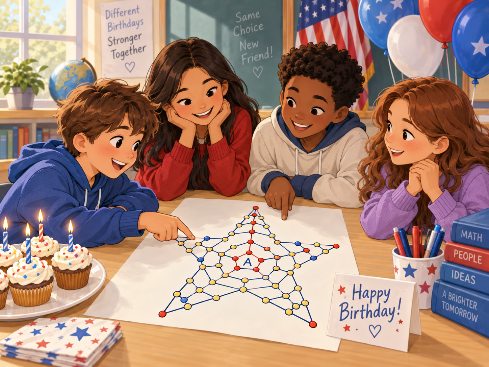

Birthdays
- Student-pairs
- 1
- Possible choices
- 365
0.274%chance of a match · 1 in 365
Educator Resources · Probability Exploration
How quickly does the chance of a matching path grow as more students participate?
This activity borrows the idea behind the classic Birthday Problem and applies it to the 359,277,250 possible paths in The Great American Star.

01 · One pair
Suppose two students each independently choose one of the 359,277,250 Great American Star paths at random.
The first student may choose any path.
For the second student to match the first, exactly one of the 359,277,250 paths works.
With only two students, there is only one pair to compare.
Our mathematical model: every path is equally likely, and each student’s choice is independent of the others. These calculations describe that model, rather than guaranteeing how students choose paths in the creator.
02 · Count the comparisons
What changes if 20 students each independently choose a random path?
Every student can potentially match every other student. We need to count pairs, not simply multiply the two-student probability by 20.
20 × 19 ÷ 2 = 190 pairs
Each of the 20 students can be paired with 19 others. That counts every pair twice: Alex–Sam and Sam–Alex are the same pair. Dividing by 2 counts each pair once.
20 students produce 190 different student-pairs. That means there are 190 opportunities for a match.
It is easier to calculate the chance that no one matches, then subtract it from 1.
The first student has all paths available. To avoid a match, the second has one fewer choice, the third has two fewer, and so on.
The exact product gives approximately 0.0000528839366%, rounded above to 0.0000529%. This is the probability of at least one duplicate anywhere in the group.
Adding the probabilities for 190 pairs gives a very close approximation here, but it is not the exact calculation: a group can contain more than one matching pair.
03 · The classic birthday problem
Now compare paths with birthdays. Assume 365 equally likely birthdays, independent from student to student, and ignore leap day.
For two students, the chance of the same birthday is 1 in 365, or approximately 0.274%.
For 20 students, there are again 190 pairs. But the probability that at least two share a birthday is approximately 41.1%.
The classic calculation uses the same no-match method, with 365 possible choices instead of 359,277,250.
Compare the possibilities
Each percentage below is the chance of at least one matching pair in the group. All values are rounded.
0.274%chance of a match · 1 in 365
0.000000278%chance of a match · 1 in 359,277,250
41.1%chance of at least one match
0.0000529%chance of at least one match
20 students create 190 possible pairs whether we are comparing birthdays or Great American Star paths. What changes dramatically is the size of the pool: 365 birthdays versus 359,277,250 paths.
More students → many more pairs → more chances to match.
A much larger pool of possibilities → a much smaller chance that any pair actually matches.
Pause, predict, discuss
Invite students to explain their predictions before reaching for a calculation.
The key idea
The surprising lesson is not simply that more students increase the chance of a match.
The deeper lesson is that two quantities matter:
The classic birthday problem has many pairs competing inside a very small pool of 365 possibilities.
The Great American Star has the same number of pairs, but they are spread across 359,277,250 possible paths.
That is why the probability remains extraordinarily small.